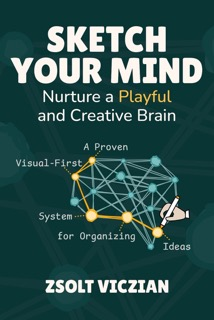

Sketch Your Mind
Turning Notes into a Playground of Ideas
Abstract
Discover how Hybrid Notes, where sketches and text meet, make knowledge more memorable, connected, and actionable.
In this opening session, Zsolt will set the stage for a conference built on curiosity, creativity, and connection. He'll introduce the core ideas from his book Sketch Your Mind and show how Hybrid Notes combine sketches, text, and spatial layouts into a living system of ideas. You don't need to be able to draw, Hybrid Notes work just as well for text-first thinkers as they do for visual-first ones. By “LEGO-izing” your notes, you can move beyond linear thinking, spark new connections, and turn your knowledge into something you can play with, share, and grow.
Key takeaways:
- Why visual thinking is for everyone, not just people who draw
- How to build Hybrid Notes that are both memorable and connected
- How play transforms note-taking into creative, collaborative thinking